The feel
The Flash cartoon is casual, cheeky and a little gross. Alien Hominid's art has "a delightfully casual, hand-drawn quality",1 and its hero is a happy alien who smiles even while he spills blood.2 The Behemoth's games have light toilet humour and a ramshackle "anything goes" aesthetic, where the knights of Castle Crashers can end up playing volleyball or mowing down aliens on a UFO.3 On Newgrounds anyone could post, the rankings decided who got noticed, and a bad cartoon was "blammed" into the depths of the site.4
It is the look of one person doing everything. Tom Fulp says Flash caught on because artists could draw, animate and program in one place,5 and Edmund McMillen liked that you could make something visually impressive in a very short time and have hundreds of thousands of people playing it. In his words, Flash meant you needed only one or two people to make a game, and your voice could be heard.6 The look also carried a stigma: McMillen believes that without their producer's backing, Microsoft would have dismissed Super Meat Boy as something that "looks like a Flash game".7
- cheeky
- scrappy
- loud
- homemade
- gross-out
- dial-up
Where it comes from
Jonathan Gay designed a drawing program for tablet computers, and when people at SIGGRAPH told him it would make a great animation program, it went onto the web as FutureSplash, later shortened to Flash.5 Tom Fulp added a Portal for Flash work to Newgrounds in 1998 and automated it in 2000; through the site he met Dan Paladin, and their Flash game Alien Hominid led to The Behemoth and Castle Crashers.6 Meat Boy, which Edmund McMillen made with Jon McEntee in about three weeks, grew into Super Meat Boy,7 and McMillen and Florian Himsl built The Binding of Isaac in Flash as well.8 The iPhone never supported Flash and Adobe announced its end for 2020,6 yet Friday Night Funkin' (2020) was made by people who met on Newgrounds, to be the Newgrounds game they had always wanted.9
Core elements
Flat vector colour
Flash drew in vectors, light enough for animation to travel down dial-up phone lines.6 Robin Lyons, a founder of Siriol in Cardiff, calls the result a bright, clean look, very flat, good for things that are graphic and simply designed.10 Vector art can be resized without losing any quality,11 and Dan Paladin puts The Behemoth's Flash-like look down to the nature of vectors.12
Thick outlines
Hardcore Gaming 101 describes the look Castle Crashers shares with Alien Hominid and many Newgrounds Flash games as bright colours, thick outlines, cartoonish proportions and comical expressions.13 The lines are drawn by hand: Dan Paladin draws in Flash MX on a Wacom tablet and uses nothing else,14 and PopMatters found his art delightfully casual and hand-drawn.1
Simple, bold characters
Paladin traces the way he draws to impatience and a love for simplicity,14 and after years of it he no longer draws necks or noses.12 For PC Gamer's Rachel Watts, bold character designs and a hint of cheekiness are part of why Friday Night Funkin' feels like a Newgrounds game.9
A library of body parts
Characters are put together from a library of body parts, props, lighting effects and backgrounds, each stored once as a symbol and reused to keep the file small, and with such a library one Flash artist can animate at breakneck speed.11 Jeff Nodelman of Noodlesoup says that for a cut-out look you can archive body and mouth charts, and walk cycles are a breeze; FWAK!'s Lili Chin and Eddie Mort reuse libraries of drawn elements across a whole series to keep characters on model.10
Tweened movement
The computer can draw the frames between two poses, a tween, and by tweening or by drawing each frame, one animator could in theory finish a 10-second chunk in a day.11 On the web, Larry Schwarz's studio could cheat on in-betweens and keep files small, and Jeff Nodelman says a show that leans on the tweening tools has more of the Flash look. A figure animated that way moves at its joints, only in the way a puppet can.10
Cartoon gore and toilet humour
The violence is cartoonishly outlandish: Alien Hominid's enemies die in exaggerated fountains of blood.1 Castle Crashers scatters sight gags through its fights, such as wild animals soiling themselves in fear,3 and Krinkels' Madness cartoons are wordless, goofy, ultraviolent fights between mannequin-like figures.4
How to do it
Set the frame rate
Animate at 12 frames per second, the default in early versions of the tool behind these cartoons; later versions moved to 24.15 The frame rate and the length of a move set how many frames fall between two keyframes, so a slower move gets more in-betweens.15
Ink with a pressure brush
Start with a sketch and a rough first pass of the animation, then draw the final; Dan Paladin usually throws the first pass away.14 Ink straight into vectors with a stylus, and let pressure set the width of each stroke.16
Fill with flat colour
Stroke and fill are separate elements, so you can recolour or move either one on its own.17 Fill each area with one flat colour, and for a second tone inside it, use a brush mode that paints only the fill where the stroke starts and never touches the lines.16 Aim for a bright, clean, flat look.10
Split the character into parts
Store each body part as a reusable symbol in a library.11 Chain the parts from parent to child, shoulder to elbow to wrist, attaching each one where it joins the next, so that a torso, arm, lower arm and hand move together.18
Tween between keyframes
Pose the start and end keyframes and let the computer draw the frames between: one kind of tween changes a symbol's size, position or colour, another morphs the shape itself.15,19 On a shape tween, place matching hints on both shapes in the same order, anticlockwise from the upper-left corner, so that features such as eyes stay recognisable.19 Add easing, because a tween otherwise moves at an even pace.15
Draw the big moves by hand
Squash and stretch needs hand-drawn in-betweens.10 Turn on onion skinning to see the previous and following frames while you draw them, and save frame-by-frame drawing for these moments, because it grows the file faster than tweens do.20
Rasterise the parts for the game
If your game can't draw vectors, cut the art into sheets and rasterise the parts. On the original Alien Hominid some vectors would not convert, and The Behemoth spent weeks rasterising Paladin's art this way; it now exports with tools of its own.12
Cheat sheet
- Frame rate
- 12 fps in early versions, 24 later15
- Artwork
- Vectors, resizable without loss11
- Colour
- Bright, clean and flat10
- Proportions
- Cartoonish, with comical expressions13
- Rig
- Parts chained shoulder to elbow to wrist18
- In-betweens
- Tweened, with squash and stretch drawn by hand10
- Pace
- In theory 10 finished seconds a day per animator11
Do
- Keep a library of body parts, props and mouth charts, and reuse it across scenes.11,10
- Hide the repeats. Jeff Nodelman's answer is to change a reused tree into a barber pole or a T-rex, or shift the hues to turn day into night.10
- Draw squash and stretch by hand and tween the rest.10
- Rough out the animation once, then redraw it clean. Dan Paladin usually throws his first pass away.14
- Simplify the anatomy. Paladin leaves out necks and noses.12
Avoid
- Tweening everything. A tweened figure moves only at its joints, the way a puppet can.10
- Motion at one even speed. A tween moves at an even pace until you ease it.15
- Subtle, naturalistic acting. Robin Lyons finds the look suits things that are graphic, simply designed and don't need sophisticated expression.10
- Smooth, geometrically perfect vector shapes. PopMatters set Paladin's casual, hand-drawn art apart from them.1
- One huge animation file for a whole game. Once The Binding of Isaac's source file passed 300 MB, it could no longer be exported reliably without crashing.8
Tools and tutorials
- Adobe Animate
Formerly Flash Professional. Its user guide covers pressure brushes, symbols, tweens, bones and onion skinning.
- Flash Tips and Best Practices for Designers: Animation
Ashish Bogawat on frame rates, the kinds of tween and easing.15
- Synfig Studio
Free, open-source 2D vector animation with tweening and a skeleton for cut-out rigs.
- Ruffle
A Flash Player emulator that plays the old cartoons and games in a modern browser, so you can study the originals.
- Flashpoint Archive
A preservation project that keeps web games and animations of the Flash era playable.
Palette
Outline, knight red, knight blue and knight green come from the Castle Crashers Remastered key art, hominid yellow from Alien Hominid HD, bandage pink from Super Meat Boy's cutscene, street violet from the 2002 Flash Alien Hominid and sunset orange from The Henry Stickmin Collection's train-roof sunset.
Feel the vibe
Listen
Put it on while you study the knights in the lead image.
YouTubePair it with the Meat Boy cutscene and loop above.
YouTubePair it with the Henry Stickmin pictures and the Free Transform loop on this page.
YouTubeKeep it on through a long session of inking and flat colour.
YouTubeFrom outside games: a bright, driving electronic track for a long night of keyframing a fight scene.
YouTube
More references

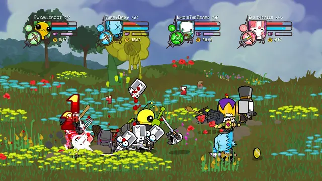

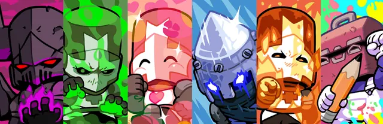

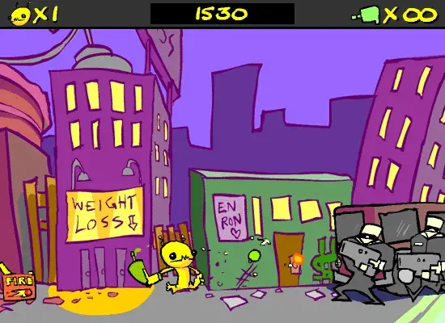

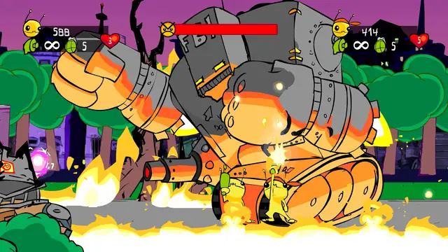

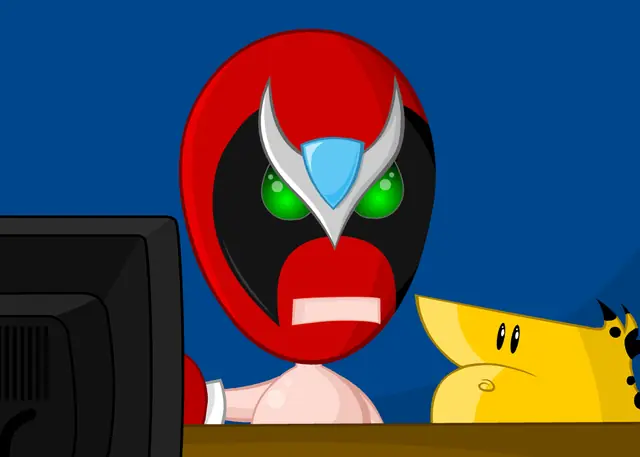

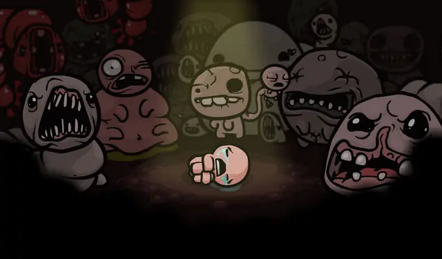

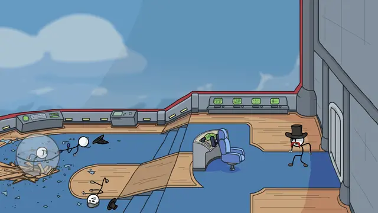

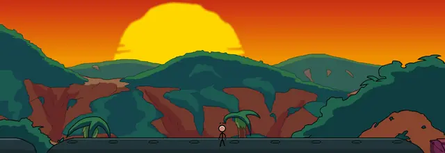

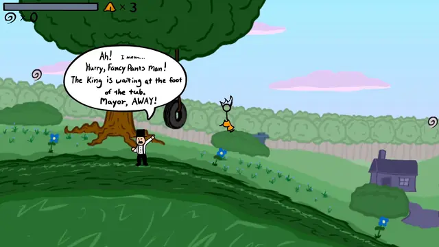

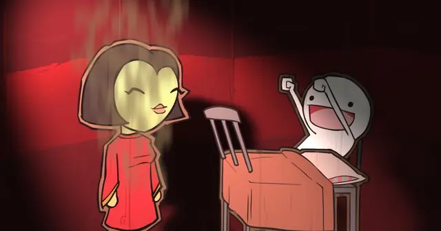

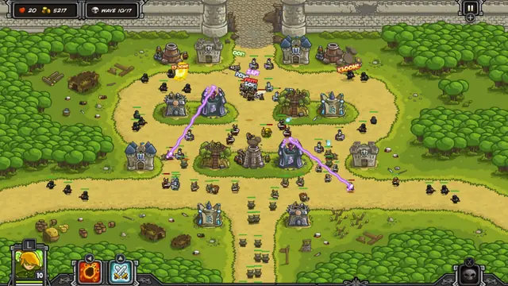
Games
- Alien Hominid
Began as a free online Flash game and was redrawn for consoles.2 Study its very large hand-drawn bosses and its fountains of cartoon blood.2,1
- Castle Crashers
Apart from the player portraits, all of its art is Dan Paladin's, drawn in Flash.12 Study the sight gags.3
- Super Meat Boy
Grew out of Meat Boy, a Flash game made in about three weeks, whose hero is a ninja with no skin.7 Study how a tiny hero stays readable at speed.
- The Binding of Isaac
Made in Flash with ActionScript 2 in about three months of part-time work.8 Study its gross-out creature designs.
- Kingdom Rush
One of the indie hits that began as Flash games.6 Study how its towers and enemies stay readable at a small size.
- BattleBlock Theater
The Behemoth's third game, grown from a stick-figure mini-game in Alien Hominid.14 Study its square-headed cast and the stages they cross, built from blocks.
- The Henry Stickmin Collection
A Newgrounds choose-your-own-path classic, collected and remastered: one game reanimated from scratch, the others given new backgrounds.21 Study the gag animations that play when a wrong choice leads to a fail.21
- Friday Night Funkin'
A Ludum Dare 47 entry from October 2020, uploaded to Newgrounds.9 Study its bold character designs.9
Film, art and more
- Newgrounds
Tom Fulp's site. Its Portal, automated in 2000, put every Flash submission online at once.6
- Homestar Runner
A web cartoon known for unpredictable humour and swift changes in tone.22 In its 2015 short Flash is Dead!!, Strong Bad yells as bits of the interface collapse around him.4
- ¡Mucha Lucha!
Bought by Warner Bros. in 2001 as the first Flash series for US network TV. Jeff Nodelman points to it for the tweened Flash look.10
- This Land!
JibJab's 2004 cartoon of George W. Bush and John Kerry, made in Flash.5
- Salad Fingers
David Firth's series, from the same strain of unpredictable internet comedy.22
Sources
- 1Alien Hominid
- 2Close encounters of the 2D kind. Review
- 3Castle Crashers
- 4The Life and Death of the Flash Cartoon
- 5How Flash Brought The Internet To Life
- 6How Flash Games Changed Video Game History
- 7Super Meat Boy Afterwords
- 8Postmortem: McMillen and Himsl's The Binding of Isaac
- 9Friday Night Funkin' is the DDR beatboxing game driving players back to Newgrounds
- 10Flash Animation: More Flash Than Pan?
- 11Flash's Strong Suits: Quick, Cheap and Easy Production
- 12Taunting The Behemoth: Tom Fulp and Dan Paladin Cry Out
- 13Castle Crashers
- 14Interview with Dan Paladin
- 15Flash Tips and Best Practices for Designers: Animation
- 16Draw lines and shapes with Adobe Animate
- 17Draw and create objects with Animate
- 18Using Bone tool animation in Animate
- 19Shape tweening
- 20Frame-by-frame animation in Animate
- 21The Henry Stickmin Collection
- 22Flash, Newgrounds and the convergence between the story of the Internet and video games